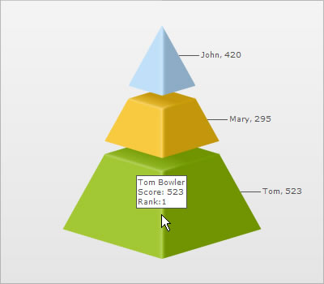

| Putting tooltip in multiple lines |
| FusionWidgets allows you to put your tooltips in multiple lines with a little manual tweaking. Consider the XML below: |
<chart> {
"chart": {},
"data": [
{
"label": "John",
"value": "420",
"tooltext": "John Miller{br}Score:420{br}Rank:2"
},
{
"label": "Mary",
"value": "295",
"tooltext": "Mary Evans{br}Score:295{br}Rank:3"
},
{
"label": "Tom",
"value": "523",
"tooltext": "Tom Bowler{br}Score: 523{br}Rank:1"
}
]
} |
|
In the above XML/JSON, we're first setting 3 lines tooltip content for each <set>. To separate each line we use the {br} pseudo code, which is equivalent to <BR> HTML tag in FusionWidgets for tooltips. When you now see the chart, you'll get the following output: |
|  |